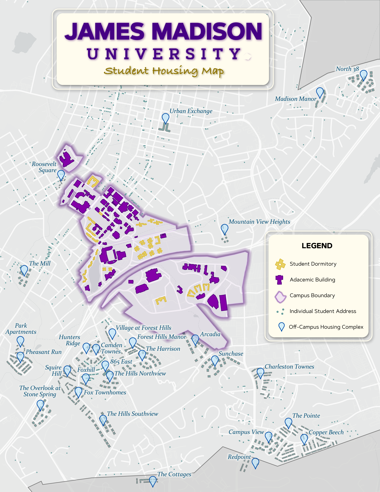

During my Spring 2026 internship with the Harrisonburg City Manager's Office, I worked alongside the Housing Coordinator to create a GIS layer for the city containing housing units. One of the maps we created visualized where JMU students reside during the school year, using aggregated, anonymized address data provided by the university.